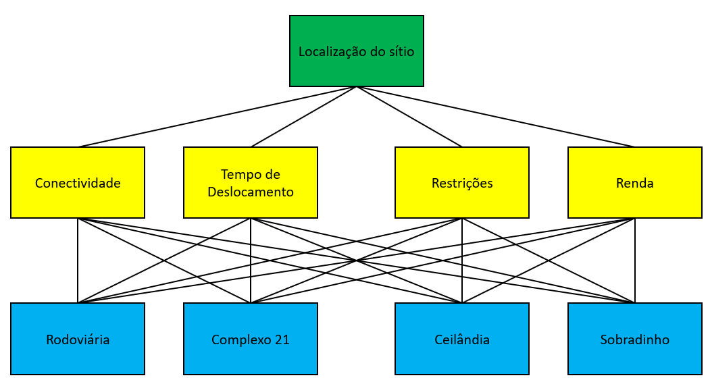
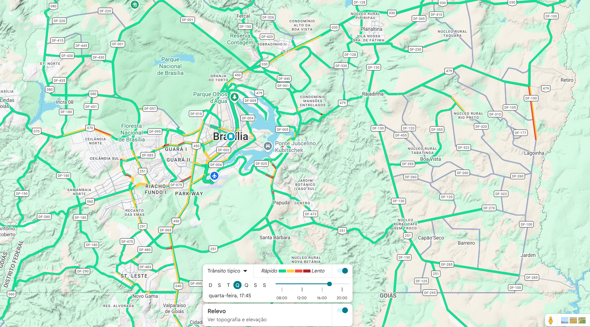
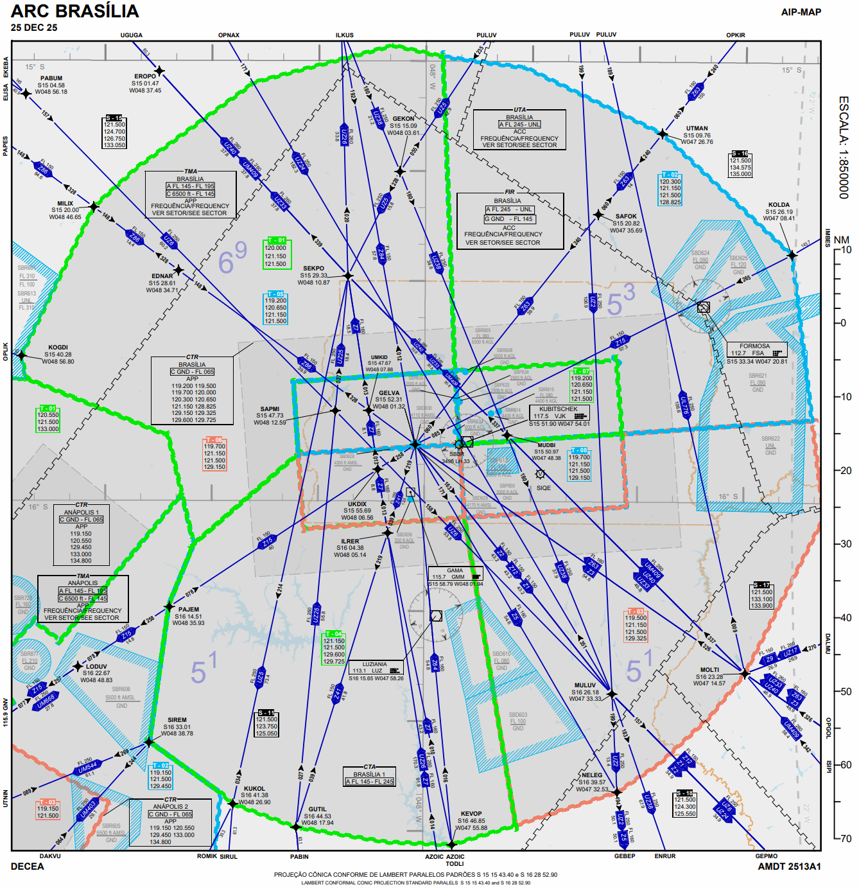
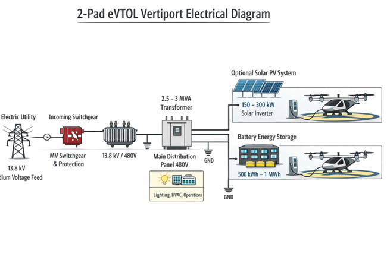

AHP para Seleção de Local de Vertiporto
O projeto considera a seleção de 3 localidades para implantação do Vertiporto. Considerando o Aeroporto Internacional de Brasília - SBBR um vertiporto natural, resta a seleção de mais 2 sítios para o conjunto de vertiportos, os quais serão selecionados pela metodologia AHP.
Pré-Seleção de Vertiportos
Para garantir a variabilidade de opções, características e comportamentos foram pré-selecionadas 2 alternativas no Plano Piloto e 2 alternativas nas RAs.
A Rodoviária foi considerada uma alternativa com alta conectividade.
O Complexo 21 foi considerado por apresentar demanda constante com eventos ao longo da semana e o perfil socioeconômico.
Ceilândia e Sobradinho foram escolhidos considerando localizações opostas entre si, maior volume populacional e potencial de ganho de tempo para deslocamento ao aeroporto ou Plano Piloto.
| Plano Piloto | RA |
|---|---|
| Rodoviária | Sobradinho |
| Complexo 21 | Ceilândia |
Sobradinho foi escolhido no eixo norte por combinar alta demanda pendular, forte dependência do sistema viário e posição estratégica intermediária, funcionando como hub regional dentro do DF capaz de captar fluxos de áreas mais distantes (como Planaltina) de forma mais eficiente.
Ceilândia foi selecionada no eixo oeste por apresentar forte geração de viagens, dependência relevante de transporte coletivo e melhor ganho de tempo em relação a Taguatinga, além de atuar como ponto de absorção regional para deslocamentos mais longos.
Planaltina não foi escolhida, apesar do alto potencial de economia de tempo, porque seu benefício se concentra mais na demanda local, enquanto Sobradinho oferece melhor lógica de rede como hub intermediário.
Taguatinga foi descartada pois, no modelo com hub no aeroporto, o ganho de tempo é baixo, tornando o deslocamento direto por carro mais competitivo e diminuindo a atratividade do vertiporto.
Nas RAs foi necessário ainda definir o sítio exato para implantação. Tal escolha levou em consideração áreas centrais, próximas a comércios e abertas para facilitar infraestrutura:
Sobradinho — Estádio Augustinho Lima
Ceilândia — Praça do Metrô


Definição dos Critérios
Foram selecionados 3 critérios principais para seleção do sítio: Conectividade, Tempo de Deslocamento e Restrições.
Para definir os 3 critérios principais foi realizado um brainstorm com o grupo elencando critérios possíveis, seguido de uma votação. Os 3 critérios selecionados foram os que apresentaram maior quantidade de votos.
| Critério | Votos |
|---|---|
| Conectividade | 5 |
| Tempo de Deslocamento | 5 |
| Restrições | 3 |
| População | 2 |
| Ruído | 0 |
| Distância | 0 |
A fim de medir cada critério por alternativa, optou-se por utilizar métodos objetivos para quantificar tais atributos, tornando o modelo mais consistente e robusto.
| Critério | Definição | Método de cálculo | Interpretação |
|---|---|---|---|
| Conectividade | Grau de integração dos modais e interligação a diversas localidades, de modo fácil e acessível. | Quantidade de modais a 10 min de distância caminhando. Pesos: Aéreo = 1, Metroviário = 2, Rodoviário = 3.* | Quanto maior, melhor. |
| Tempo de Deslocamento | Tempo de referência de deslocamento por modais "padrão" até o vertiporto natural — Aeroporto Internacional de Brasília. | Tempo médio entre o sítio e o aeroporto na hora pico, considerando carro e transporte público (em minutos). | Quanto maior, melhor. |
| Restrições | Limitações para operação devido a restrições legais, operacionais e/ou ambientais. | Quantidade de restrições em relação ao Espaço Aéreo, à municipalidade e ao meio ambiente. Cada restrição equivale a 1 ponto. | Quanto menor, melhor. |
*Pesos arbitrados levando em consideração análises como capacidade, flexibilidade, custo, capilaridade, tempo e escala.
Estrutura para análise do método AHP

Memória de Cálculo
Conectividade
| Alternativa | Detalhamento | Cálculo |
|---|---|---|
| Rodoviária | Rodoviária metropolitana, rodoviária interurbana/ônibus, metrô | (2×3 + 1×2) = 8 |
| Complexo 21 | Heliponto, ônibus | (1×3 + 1×1) = 4 |
| Sobradinho | Rodoviária metropolitana, rodoviária interurbana/ônibus | (2×3) = 6 |
| Ceilândia | Metrô, ônibus | (1×2 + 1×3) = 5 |
Tempo de Deslocamento
| Alternativa | Detalhamento | Cálculo |
|---|---|---|
| Rodoviária | 53 min de transporte público e 14 min de carro | (53 + 14)/2 = 33,5 min |
| Complexo 21 | 56 min de transporte público e 18 min de carro | (56 + 18)/2 = 37 min |
| Sobradinho | 103 min de transporte público e 40 min de carro | (103 + 40)/2 = 71,5 min |
| Ceilândia | 72 min de transporte público e 50 min de carro | (72 + 50)/2 = 61 min |
Restrição
| Alternativa | Detalhamento | Cálculo |
|---|---|---|
| Rodoviária | 1 AGA (PBZPA SBBR) e 1 Patrimônio Cultural | (1 + 1) = 2 |
| Complexo 21 | 1 AGA (PBZPA SBBR) e 1 Patrimônio Cultural | (1 + 1) = 2 |
| Sobradinho | N/A | 0 |
| Ceilândia | 1 AGA (PBZPA SBBR) | (1) = 1 |
Detalhamento das Restrições
Restrições Espaço Aéreo → AGA + EAC + REAH

Restrições Ambientais → Área de Proteção Ambiental (APA)

Restrições Ambientais → APA Planalto Central

Quadro Resumo
| Alternativa | Conectividade | Tempo | Restrições |
|---|---|---|---|
| Rodoviária | 8 | 33,5 | 2 |
| Complexo 21 | 4 | 37 | 2 |
| Sobradinho | 6 | 71,5 | 0 |
| Ceilândia | 5 | 61 | 1 |
Conectividade = valor / máximo | Tempo = valor / máximo | Restrições = 1 / (1 + restrições)
| Alt | Conectividade | Tempo | Restrições |
|---|---|---|---|
| A — Rodoviária | 1,000 | 0,469 | 0,333 |
| B — Complexo 21 | 0,500 | 0,517 | 0,333 |
| C — Sobradinho | 0,750 | 1,000 | 1,000 |
| D — Ceilândia | 0,625 | 0,853 | 0,500 |
| Conectividade | Tempo | Restrições | |
|---|---|---|---|
| Conectividade | 1 | 0,333 | 5 |
| Tempo | 3 | 1 | 7 |
| Restrições | 0,2 | 0,143 | 1 |
Pesos Calculados
| Critério | Peso |
|---|---|
| Conectividade | 0,283 |
| Tempo | 0,643 |
| Restrições | 0,074 |
Consistência: CR = 0,056 (Aceitável)
Score = (C × 0,283) + (T × 0,643) + (R × 0,074)
| Alt | Cálculo | Score |
|---|---|---|
| A — Rodoviária | (1×0,283)+(0,469×0,643)+(0,333×0,074) | 0,609 |
| B — Complexo 21 | (0,5×0,283)+(0,517×0,643)+(0,333×0,074) | 0,498 |
| C — Sobradinho | (0,75×0,283)+(1×0,643)+(1×0,074) | 0,929 |
| D — Ceilândia | (0,625×0,283)+(0,853×0,643)+(0,5×0,074) | 0,762 |
| Posição | Alternativa | Score |
|---|---|---|
| 1º | C — Sobradinho | 0,929 |
| 2º | D — Ceilândia | 0,762 |
| 3º | A — Rodoviária | 0,609 |
| 4º | B — Complexo 21 | 0,498 |
Sensibilidade Marginal
| Alt | dScore/dC | dScore/dT | dScore/dR |
|---|---|---|---|
| A | 1,000 | 0,469 | 0,333 |
| B | 0,500 | 0,517 | 0,333 |
| C | 0,750 | 1,000 | 1,000 |
| D | 0,625 | 0,853 | 0,500 |
Impacto de +1% no Peso do Tempo
| Alt | ΔScore |
|---|---|
| A | +0,0047 |
| B | +0,0052 |
| C | +0,0100 |
| D | +0,0085 |
Interpretação: A alternativa C é a mais sensível ao critério tempo, o que explica sua robustez no ranking.
A alternativa C (Sobradinho) apresenta desempenho superior em todos os cenários analisados, com alta robustez devido à dominância nos critérios de tempo e restrições.
O trade-off principal do modelo ocorre entre as alternativas A (conectividade) e D (tempo), evidenciando o impacto estratégico da definição de pesos.
AHP Interativo — Análise de Sensibilidade
Ajuste os pesos dos critérios e veja o ranking se atualizar em tempo real.
| Alternativa | Score |
|---|
Mapas e Análises Complementares





Necessidades Energéticas dos Vertiportos
Previamente à obtenção de dados de demanda, tráfego, operações/dia, número de aeronaves, tempo/consumo de recarga e infraestrutura energética do vertiporto, pode-se fazer a premissa inicial: o vertiporto da RA terá 2 TLOF/FATO/Safety + 2 Stands, por questão de módulo de redundância mínimo — denominado na literatura de '2-pad vertiport', conforme diagrama elétrico mostrado na figura a seguir.

Considerando as 2 posições de recarga rápida (150–200 kWh/recarga, 15–25 min 'turnaround') tem-se, no horário de pico, 1,4–2 MW na recarga. Incluindo o consumo energético da infraestrutura, iluminação, HVAC, sistemas e operações, tem-se um total de 2–2,5 MW, para o que se dimensiona um transformador de 2,5 a 3 MVA, seguido de conversor e chave de proteção para a entrada da concessionária em 13,8 kV. Esta configuração inclui, como opcionais, reservas locais de baterias e painéis solares, o que reduz o gasto com a concessionária e torna o vertiporto mais ambientalmente sustentável.
No Brasil, esta infraestrutura pode representar um investimento de R$ 2–3 milhões e um consumo médio diário de 3 MWh, enquanto os 2 carregadores (da ordem de 1 MW cada) adicionam investimento da ordem de R$ 2 milhões.
A concessionária de distribuição no DF é a Neoenergia DF. A carga total disponível hoje para o DF está em torno de 1.000 MW. Um vertiporto de 2–2,5 MW deve poder ser atendido sem maior dificuldade, podendo exigir reforço local em 13,8 kV, o que pode custar de R$ 200–400 mil/km em Sobradinho. Como Ceilândia possui maior densidade de centros de distribuição, a distância provável e o custo devem ser bem menores.
Em Desenvolvimento
Esta seção será expandida com mapas, gráficos e resultados detalhados das análises espaciais e estimativas de demanda realizadas ao longo do projeto.